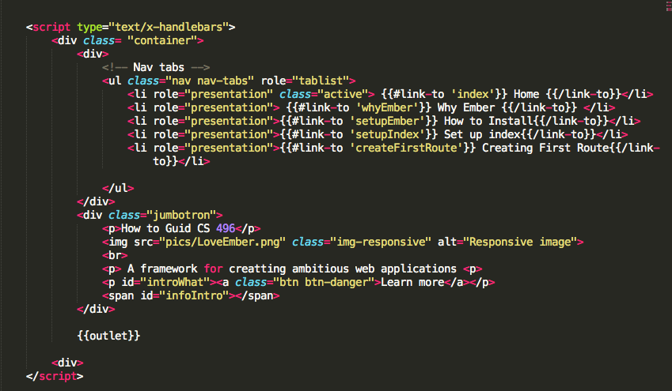

<!DOCTYPE html>
<html>
<head>
	<title> How to Ember.JS </title> 
	
	<script src="libs/jquery-1.11.3.js"></script>
	<!-- Latest compiled and minified CSS -->
	<link rel="stylesheet" href="https://maxcdn.bootstrapcdn.com/bootstrap/3.3.5/css/bootstrap.min.css">

	<!-- Optional theme -->
	<link rel="stylesheet" href="https://maxcdn.bootstrapcdn.com/bootstrap/3.3.5/css/bootstrap-theme.min.css">

	<!-- Latest compiled and minified JavaScript -->
	<script src="https://maxcdn.bootstrapcdn.com/bootstrap/3.3.5/js/bootstrap.min.js"></script>

	<!-- Libary for showing html :https://github.com/showdownjs/showdown -->
	<script
  src="//cdnjs.cloudflare.com/ajax/libs/showdown/1.0.2/showdown.js">
</script>


	
  	<script src="libs/handlebars-v1.3.0.js"></script>
  	<script src="libs/ember.js"></script>
  	<script src="libs/ember.debug.js"></script>
  	
  	<script src="howto.js"></script>
  	<script src="router.js"></script>

  	<script> 
  			$(function(){
  				$("#introWhat").click(function(){
  					$('#infoIntro').html(" <p style= 'color:red'> This guide will take you through creating this simple application using Ember.js *Ember is rapidly changing an infact on 2.0 </p>" );
  				}); 
  			}); 
  	</script>


	<script type="text/x-handlebars">
	  	<div class= "container"> 
	  		<div>
	  			<!-- Nav tabs -->
	  			<ul class="nav nav-tabs" role="tablist">
	    			<li role="presentation" class="active"> {{#link-to 'index'}} Home {{/link-to}}</li>
	    			<li role="presentation"> {{#link-to 'whyEmber'}} Why Ember {{/link-to}} </li>
	    			<li role="presentation">{{#link-to 'setupEmber'}} How to Install{{/link-to}}</li>
	    			<li role="presentation">{{#link-to 'setupIndex'}} Set up index{{/link-to}}</li>
	    			<li role="presentation">{{#link-to 'createFirstRoute'}} Creating First Route{{/link-to}}</li>
	    			<li role="presentation">{{#link-to 'dynamicContent'}}Dynamic Content{{/link-to}}</li>


	  			</ul>	
	  		</div>
			<div class="jumbotron">
				<p>How to Guid CS 496</p>
	  			
	  			<br>
	  			<p> A framework for creatting ambitious web applications <p>
	  			<p id="introWhat"><a class="btn btn-danger">Learn more</a></p>
	  			<span id="infoIntro"></span> 
	  		</div>

	  		{{outlet}}

		<div>

</script>


	<!-- templets why ember--> 
	<script type="text/x-handlebars" id="setupIndex">
  		<div class="setupIndex">
  			<h1>First thing first</h1>
  			<h3> To really open up your eyes to the potential of ember you need to first create a basic html document similar to the following:</h3>

  			<p>* make sure all scripts from libary are included pic below is just bare bones html</p>
  			

  			<h3> Now I want you to add an additional script to the page within the header be exact:</h3>
  			 
  			

  			<h3> the way that ember works this is now your default meaning if you put anything in this script since this is the index page it will always be here<h3>

  			<p> Im going to put a nav bar and a icon in this script <p>

  			

  			<h3> Now if i go in the address bar and type in: '/' i will see the following: </h3>

  			

  			<h3> Now because you came here to learn the basics lets get busy</h3> 
  			<h3> look at the code sample above do you see the word outlet?<h3>
  			<h3> outlet will be used to render your post, move the next tab <h3>
  			</div>
  	</script> 


	<!-- templets why ember--> 
	<script type="text/x-handlebars" id="whyEmber">
  		<div class="whyEmber">
  			<h1> Why Ember</h1>
  			<h3> It makes making ambitious websites easy, plain and simple. The only way to make something big is to use abstraction to hide the complexity and that is what ember is all about. Just imagin all the hours you spend messing with jQuery plugs to get dynamic content could all be hours saved and that means more time to solve the real issue you starting building to solve not to mention Ember isnt as tacky as jquery and javascript but hey thats just my oponion clearly im not to comfortable with it</h3>

  			</div>
  	</script> 


  	<script type="text/x-handlebars" id="setupEmber">
  		<div class="setupEmber">
  			<ol>
  			{{#each}}
  				<li> {{id}} {{format-markdown what}}</li>
  			{{/each}}
  			</ol>  
  		</div>
  	</script> 


  	<!-- how to install--> 
  	<script type="text/x-handlebars" id="createFirstRoute">
  		<div class="createFirstRoute">
  			<h1>Map</h1>
  				<h3>The map method of your Ember applications router can be invoked to define URL mappings. When calling map, you should pass a function that will be invoked with the value that is set to an object which you can use to create routes and resources.</h3>
	  			
	  			

	  			<h3> this creates a map to our template </h3>
	  			<h3>  So basically if one goes to the address bar and types in : #/createFirstRoute they will be showen the index page alog with this blank template</h3>

	  			<h3> now nothing is on this page but one will be able to access the page at this point.<h3>

	  			<h3> so lets create it: </h3>
	  			

	  			<h3> now if one goes to to / they will see: <h3>

	  				
	  			<h3>yet if one goes to #/createFirstRoute I will see: <h3> 

	  			

	  			<p> the more interesting fact is that within the code they are next to each other<p>
	  			


				<h3>hopfully at this point you get the basica idea behind ember templates</h3>	  			
	  			<h3> you can set many templets at once so there is no limit to what once can do with just this basic featur of ember and thats is why ember.js is one of the next big web framworks and well known sites like NBC News are using ember<h3>

	  			<h3>Now that we have two pages lets work on linking the two pages<p>

	  			<p>Its as simple as this with ember:<h3> 

	  			

	  			<h3> lets move on to dynamic content</h3<

	  			
  		</div>
	</script>


  		<!-- how to install--> 
  	<script type="text/x-handlebars" id="dynamicContent">
  		<div class="dynamicContent">

  		<h1>As you can tell embers main goal is to make your life easier!<h1>

  			<h3>How so lets look at a json object and see how we can dynamically display it </h3>

  			<h3> do you remeber the how to install section?</h3>
  			<h3> what if I told you it looks like this on my end</h3>
  			

  			<h3> how is this possible? .. EMBER!<h3>

  			<h3> before we go forward lets show the json object</h3>

  			

  			<h3> to display this json object as a four loop all we need to do is: </h3>

  			

  			<h3> clearly if a json object is that easy thing of  using a get call<h3> 

  			<h3> overall this was just an entry on some cool things ember can do but honestly we haave just touched the surface with this framework<h3>  


  			
  	</script> 


  	</script> 


</head>

<body>
</body>
</html>
